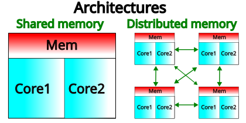
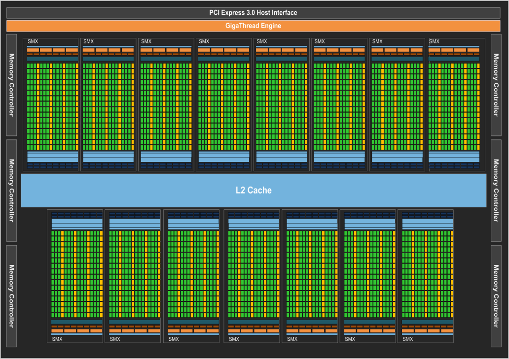
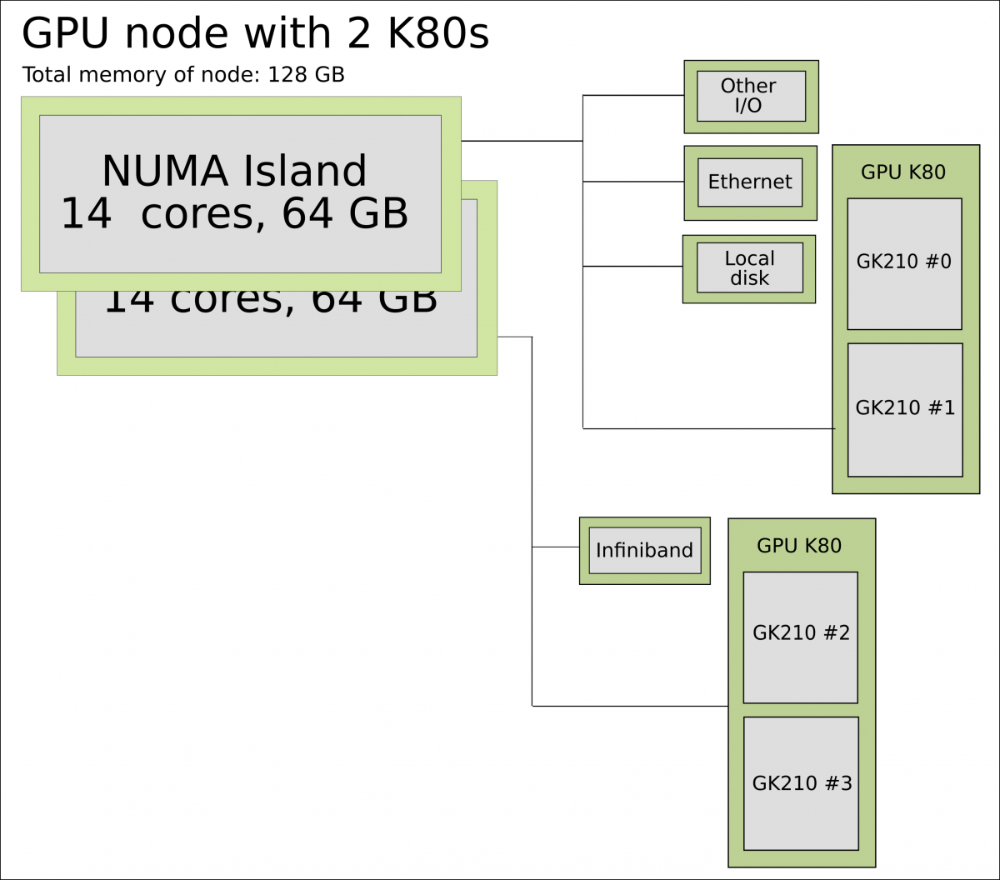
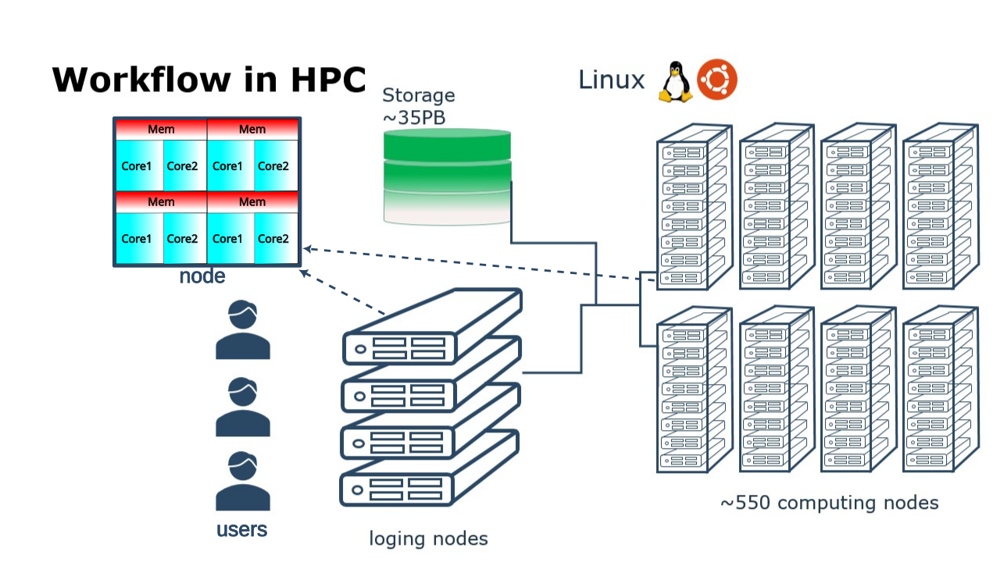
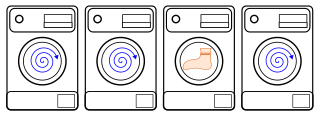

Parallel and multithreaded functions
Questions
What is parallel programming?
Why do we need it?
Where I can use it?
Objectives
Short introduction to parallel programming
Common paradigms to write a parallel code
What is parallel programming?
Parallel programming is the art of writing code that execute tasks on different computing units (cores) simultaneously. In the past computers were shiped with a single core per Central Processing Unit (CPU) and therefore it could only perform a single computation at the time (serial program).
Nowadays computer architectures are more complex than the single core CPU mentioned already. For instance, common architectures include those where several cores in a CPU share a common memory space and also those where CPUs are connected through some network interconnect.
{kind=link}

Shared Memory and Distributed Memory architectures.
A more realistic picture of a computer architecture can be seen in the following picture where we have 14 cores that shared a common memory of 64 GB. These cores form the socket and the two sockets shown in this picture constitute a node.

1 standard node on Kebnekaise @HPC2N
It is interesting to notice that there are different types of memory that are available for the cores, ranging from the L1 cache to the node’s memory for a single node. In the former, the bandwidth can be TB/s while in the latter GB/s.
Now you can see that on a single node you already have several computing units (cores) and also a hierarchy of memory resources which is denoted as Non Uniform Memory Access (NUMA).
Besides the standard CPUs, nowadays one finds Graphic Processing Units (GPUs) architectures in HPC clusters, a K80 engine looks like this:

A single GPU engine of a K80 card. Each green dot represents a core (single precision) which runs at a frequency of 562 MHz. The cores are arranged in slots called streaming multiprocessors (SMX) in the figure. Cores in the same SMX share some local and fast cache memory.
In a typical cluster, some GPUs are attached to a single node resulting in a CPU-GPU hybrid architecture. The CPU component is called the host and the GPU part the device. One possible layout (Kebnekaise) is as follows:
{kind=link}

Schematics of a hybrid CPU-GPU architecture. A GPU K80 card consisting of two engines is attached to a NUMA island which in turn contains 14 cores. The NUMA island and the GPUs are connected through a PCI-E interconnect which makes the data transfer between both components rather slow.
Why is parallel programming needed?
There is no “free lunch” when trying to use features (computing/memory resources) in modern architectures. If you want your code to be aware of those features, you will need to either add them explicitly (by coding them yourself) or implicitly (by using libraries that were coded by others).
In your local machine, you may have some number of cores available and some memory attached to them which can be exploited by using a parallel program. There can be some limited resources for running your data-production simulations as you may use your local machine for other purposes such as writing a manuscript, making a presentation, etc. One alternative to your local machine can be a High Performance Computing (HPC) cluster another could be a cloud service. A common layout for the resources in an HPC cluster is a shown in the figure below.
{kind=link}

High Performance Computing (HPC) cluster.
Although a serial application can run in such a cluster, it would not gain much of the HPC resources. The situation would be similar to turn on many washing machines to wash a single item, we can waste energy easily.
{kind=link}

Under-using a cluster.
Common parallel programming paradigms
Now the question is how to take advantage of modern architectures which consist of many-cores, interconnected through networks, and that have different types of memory available? Python, Julia, and R languages have different tools and libraries that can help you to get more from your local machine or HPC cluster resources.
Threaded programming
To take advantage of the shared memory of the cores, threaded mechanisms can be used. Low-level programming languages, such as Fortra/C/C++, use OpenMP as the standard application programming interface (API) to parallelize programs by using a threaded mechanism. Here, all threads have access to the same data and can do computations simultaneously. Higher-level languages have their own mechanisms to generate threads and this can be confusing especially if the code is using external libraries, linear algebra for instance (LAPACK, BLAS, …). These libraries have their own threads (OpenMP for example) and the code you are writing can also have some threded mechanism such as Julia threads. Due to a locking mechanism in Python, Python threads are not efficient for computation. However, the Mojo project is striving to leverage the threaded parallelism in Python.
From the previous paragraph we infer that without doing any modification to our code we can get the benefits from parallel computing by turning-on/off external libraries, by setting environment variables such as OMP_NUM_THREADS.
A common issue with shared memory programming is data racing which happens when different threads write on the same memory address.
GPU programming has similar patterns to shared memory programming but there are major differences, for instance in the former one works with highly optimized pieces of code that can run on thousand of cores (kernels). Also the APIs are different, with NVIDIA and ROCM being two of the most common ones in GPU programming.
Distributed programming
Although threaded programming is convenient because one can achieve considerable initial speedups with little code modifications, this approach does not scale for more than hundreds of cores. Scalability can be achieved with distributed programming. Here, there is not a common shared memory but the individual processes (notice the different terminology with threads in shared memory) have their own memory space. Then, if a process requires data from or should transfer data to another process, it can do that by using send and receive to transfer messages. A standard API for distributed computing is the Message Passing Interface (MPI). In general, MPI requires refactoring of your code.
Demo
In the following example sleep.py the sleep() function is called n times first in serial mode and then by using n processes.
import sys
from time import perf_counter,sleep
import multiprocessing
# number of iterations
n = 6
# number of processes
numprocesses = 6
def sleep_serial(n):
for i in range(n):
sleep(1)
def sleep_threaded(n,numprocesses,processindex):
# workload for each process
workload = n/numprocesses
begin = int(workload*processindex)
end = int(workload*(processindex+1))
for i in range(begin,end):
sleep(1)
if __name__ == "__main__":
starttime = perf_counter() # Start timing serial code
sleep_serial(n)
endtime = perf_counter()
print("Time spent serial: %.2f sec" % (endtime-starttime))
starttime = perf_counter() # Start timing parallel code
processes = []
for i in range(numprocesses):
p = multiprocessing.Process(target=sleep_threaded, args=(n,numprocesses,i))
processes.append(p)
p.start()
# waiting for the processes
for p in processes:
p.join()
endtime = perf_counter()
print("Time spent parallel: %.2f sec" % (endtime-starttime))
First load the modules ml GCCcore/10.3.0 Python/3.9.5 and then run the script
with the command python sleep.py to use 6 processes.
DASK
There are other strategies that are more automatic. Dask is a array model extension and task scheduler. By using the new array classes, you can automatically distribute operations across multiple CPUs.
Dask is very popular for data analysis and is used by a number of high-level Python libraries:
Dask arrays scale NumPy (see also xarray)
Dask dataframes scale Pandas workflows
Dask-ML scales Scikit-Learn
Dask divides arrays into many small pieces (chunks), as small as necessary to fit it into memory.
Operations are delayed (lazy computing) e.g. tasks are queue and no computation is performed until you actually ask values to be computed (for instance print mean values).
Then data is loaded into memory and computation proceeds in a streaming fashion, block-by-block.
In the following example sleep-threads.jl the sleep() function is called n times
first in serial mode and then by using n threads. The BenchmarkTools package
help us to time the code (this package is not in the base Julia installation).
using BenchmarkTools
using .Threads
n = 6 # number of iterations
function sleep_serial(n) #Serial version
for i in 1:n
sleep(1)
end
end
@btime sleep_serial(n) evals=1 samples=1
function sleep_threaded(n) #Parallel version
@threads for i = 1:n
sleep(1)
end
end
@btime sleep_threaded(n) evals=1 samples=1
First load the Julia module ml Julia/1.8.5-linux-x86_64 and then run the script
with the command julia --threads 6 sleep-threads.jl to use 6 Julia threads.
We can also use the Distributed package that allows the scaling of simulations beyond
a single node (call the script sleep-distributed.jl):
using BenchmarkTools
using Distributed
n = 6 # number of iterations
function sleep_parallel(n)
@distributed for i in 1:n
sleep(1)
end
end
Run the script with the command julia -p 6 sleep-distributed.jl to use 6 Julia processes.
In the following example sleep.R the sleep() function is called n times
first in serial mode and then by using n processes. Start by loading the
modules ml GCC/10.2.0 OpenMPI/4.0.5 R/4.0.4
library(doParallel)
# number of iterations = number of processes
n <- 6
sleep_serial <- function(n) {
for (i in 1:n) {
Sys.sleep(1)
}
}
serial_time <- system.time( sleep_serial(n) )[3]
serial_time
sleep_parallel <- function(n) {
r <- foreach(i=1:n) %dopar% Sys.sleep(1)
}
cl <- makeCluster(n)
registerDoParallel(cl)
parallel_time <- system.time( sleep_parallel(n) )[3]
stopCluster(cl)
parallel_time
Run the script with the command Rscript --no-save --no-restore sleep.R.
In this second example, a lapply function is used in parallel mode to compute the root
square of a sequence of numbers (call the script clusterapply.R):
library(parallel)
# Define a function to be applied
square_function <- function(x) {
return(sqrt(x))
}
# Create the sequence of values
numbers <- seq(1,1000000)
# Create a cluster with 4 workers
cl <- makeCluster(4)
# Use a parallel lapply function
result_parallel <- clusterApply(cl, numbers, square_function)
# Stop the cluster
stopCluster(cl)
# Print the result
print(unlist(result_parallel))
Run the script with the command Rscript --no-save --no-restore clusterapply.R.
Exercises
Parallelizing a for loop workflow
Pandas is available in the following combo ml GCC/12.3.0 SciPy-bundle/2023.07 (HPC2N) and
ml python/3.11.8 (UPPMAX). Call the script script-df.py.
import pandas as pd
import multiprocessing
# Create a DataFrame with two sets of values ID and Value
data_df = pd.DataFrame({
'ID': range(1, 10001),
'Value': range(3, 20002, 2) # Generate 10000 odd numbers starting from 3
})
# Define a function to calculate the sum of a vector
def calculate_sum(values):
total_sum = *FIXME*(values)
return *FIXME*
# Split the 'Value' column into chunks of size 1000
chunk_size = *FIXME*
value_chunks = [data_df['Value'][*FIXME*:*FIXME*] for i in range(0, len(data_df['*FIXME*']), *FIXME*)]
# Create a Pool of 4 worker processes, this is required by multiprocessing
pool = multiprocessing.Pool(processes=*FIXME*)
# Map the calculate_sum function to each chunk of data in parallel
results = pool.map(*FIXME: function*, *FIXME: chunk size*)
# Close the pool to free up resources, if the pool won't be used further
pool.close()
# Combine the partial results to get the total sum
total_sum = sum(results)
# Compute the mean by dividing the total sum by the total length of the column 'Value'
mean_value = *FIXME* / len(data_df['*FIXME*'])
# Print the mean value
print(mean_value)
Run the code with the batch script (HPC2N):
#!/bin/bash -l
#SBATCH -A naiss2024-22-107 # your project_ID
#SBATCH -J job-serial # name of the job
#SBATCH -n 4 # nr. tasks/coresw
#SBATCH --time=00:20:00 # requested time
#SBATCH --error=job.%J.err # error file
#SBATCH --output=job.%J.out # output file
# Load any modules you need, here for Python 3.11.8 and compatible SciPy-bundle
module load python/3.11.8
python script-df.py
#!/bin/bash
#SBATCH -A hpc2n2023-110 # your project_ID
#SBATCH -J job-serial # name of the job
#SBATCH -n 1 # nr. tasks
#SBATCH --time=00:20:00 # requested time
#SBATCH --error=job.%J.err # error file
#SBATCH --output=job.%J.out # output file
# Load any modules you need, here for Python 3.11.3 and compatible SciPy-bundle
module load GCC/12.3.0 Python/3.11.3 SciPy-bundle/2023.07
python script-df.py
First, be sure you have
DataFramesinstalled as JuliaPackage.If not, follow the steps below. You can install it in your ordinaty user space (not an environment)
Open a Julia session
julia> using DataFrames
Let it be installed when asking
When done and working, exit().
Here is an exercise to fix some code snippets. Call the script
script-df.jl.Watch out for
*FIXME*and replace with suitable functionsThe functions
nthreads()(number of available threads), andthreadid()(the thread identification number) will be useful in this task.
using DataFrames
using Base.Threads
# Create a data frame with two sets of values ID and Value
data_df = DataFrame(ID = 1:10000, Value = range(3, step=2, length=10000))
# Define a function to compute the sum in parallel
function parallel_sum(data)
# Initialize an array to store thread-local sums
local_sums = zeros(eltype(data), *FIXME*)
# Iterate through each value in the 'Value' column in parallel
@threads for i =1:length(data)
# Add the value to the thread-local sum
local_sums[*FIXME*] += data[i]
end
# Combine the local sums to obtain the total sum
total_sum_parallel = sum(local_sums)
return total_sum_parallel
end
# Compute the sum in parallel
total_sum_parallel = parallel_sum(data_df.Value)
# Compute the mean
mean_value_parallel = *FIXME* / length(data_df.Value)
# Print the mean value
println(mean_value_parallel)
Run this job with the following batch script, defining that we want to use 4 threads:
#!/bin/bash -l
#SBATCH -A naiss2024-22-107 # your project_ID
#SBATCH -J job-serial # name of the job
#SBATCH -n 4 # nr. tasks/coresw
#SBATCH --time=00:20:00 # requested time
#SBATCH --error=job.%J.err # error file
#SBATCH --output=job.%J.out # output file
ml julia/1.8.5
julia --threads 4 script-df.jl # X number of threads
#!/bin/bash
#SBATCH -A hpc2n2023-110 # your project_ID
#SBATCH -J job-serial # name of the job
#SBATCH -n 4 # nr. tasks
#SBATCH --time=00:20:00 # requested time
#SBATCH --error=job.%J.err # error file
#SBATCH --output=job.%J.out # output file
ml purge > /dev/null 2>&1
ml Julia/1.8.5-linux-x86_64
julia --threads 4 script-df.jl # X number of threads
Call the script
script-df.R.
library(doParallel)
library(foreach)
# Create a data frame with two sets called ID and Value
data_df <- data.frame(
ID <- seq(1,10000), Value <- seq(from=3,by=2,length.out=10000)
)
# Create 4 subsets
num_subsets <- *FIXME*
# Create a cluster with 4 workers
cl <- makeCluster(*FIXME*)
# Register the cluster for parallel processing
registerDoParallel(cl)
# Function to process a subset of the whole data
process_subset <- function(subset) {
# Perform some computation on the subset
subset_sum <- sum(*FIXME*)
return(data.frame(SubsetSum = subset_sum))
}
# Use foreach with dopar to process subsets in parallel
result <- foreach(i = 1:*FIXME*, .combine = rbind) %dopar% {
# Determine the indices for the subset
subset_indices <- seq(from = *FIXME*,
to = *FIXME*)
# Create the subset
subset_data <- data_df[*FIXME*, , drop = FALSE]
# Process the subset
subset_result <- process_subset(*FIXME*)
return(subset_result)
}
# Stop the cluster when done
stopCluster(cl)
# Print the results
print(sum(*FIXME*)/*FIXME*)
Run the code with the following batch script:
#!/bin/bash -l
#SBATCH -A naiss2024-22-107 # your project_ID
#SBATCH -J job-serial # name of the job
#SBATCH -n 4 # nr. tasks/coresw
#SBATCH --time=00:20:00 # requested time
#SBATCH --error=job.%J.err # error file
#SBATCH --output=job.%J.out # output file
ml R_packages/4.1.1
Rscript --no-save --no-restore script-df.R
#!/bin/bash
#SBATCH -A hpc2n2023-110 # your project_ID
#SBATCH -J job-serial # name of the job
#SBATCH -n 1 # nr. tasks
#SBATCH --time=00:20:00 # requested time
#SBATCH --error=job.%J.err # error file
#SBATCH --output=job.%J.out # output file
ml purge > /dev/null 2>&1
ml GCC/10.2.0 OpenMPI/4.0.5 R/4.0.4
Rscript --no-save --no-restore script-df.R
Solution
import pandas as pd
import multiprocessing
# Create a DataFrame with two sets of values ID and Value
data_df = pd.DataFrame({
'ID': range(1, 10001),
'Value': range(3, 20002, 2) # Generate 10000 odd numbers starting from 3
})
# Define a function to calculate the sum of a vector
def calculate_sum(values):
total_sum = sum(values)
return total_sum
# Split the 'Value' column into chunks
chunk_size = 1000
value_chunks = [data_df['Value'][i:i+chunk_size] for i in range(0, len(data_df['Value']), chunk_size)]
# Create a Pool of 4 worker processes, this is required by multiprocessing
pool = multiprocessing.Pool(processes=4)
# Map the calculate_sum function to each chunk of data in parallel
results = pool.map(calculate_sum, value_chunks)
# Close the pool to free up resources, if the pool won't be used further
pool.close()
# Combine the partial results to get the total sum
total_sum = sum(results)
# Compute the mean by dividing the total sum by the total length of the column 'Value'
mean_value = total_sum / len(data_df['Value'])
# Print the mean value
print(mean_value)
using DataFrames
using Base.Threads
# Create a data frame with two sets of values ID and Value
data_df = DataFrame(ID = 1:10000, Value = range(3, step=2, length=10000))
# Define a function to compute the sum in parallel
function parallel_sum(data)
# Initialize an array to store thread-local sums
local_sums = zeros(eltype(data), nthreads())
# Iterate through each value in the 'Value' column in parallel
@threads for i =1:length(data)
# Add the value to the thread-local sum
local_sums[threadid()] += data[i]
end
# Combine the local sums to obtain the total sum
total_sum_parallel = sum(local_sums)
return total_sum_parallel
end
# Compute the sum in parallel
total_sum_parallel = parallel_sum(data_df.Value)
# Compute the mean
mean_value_parallel = total_sum_parallel / length(data_df.Value)
# Print the mean value
println(mean_value_parallel)
library(doParallel)
library(foreach)
# Create a data frame with two sets called ID and Value
data_df <- data.frame(
ID <- seq(1,10000), Value <- seq(from=3,by=2,length.out=10000)
)
# Create 4 subsets
num_subsets <- 4
# Create a cluster with 4 workers
cl <- makeCluster(4)
# Register the cluster for parallel processing
registerDoParallel(cl)
# Function to process a subset of the whole data
process_subset <- function(subset) {
# Perform some computation on the subset
subset_sum <- sum(subset$Value)
return(data.frame(SubsetSum = subset_sum))
}
# Use foreach with dopar to process subsets in parallel
result <- foreach(i = 1:num_subsets, .combine = rbind) %dopar% {
# Determine the indices for the subset
subset_indices <- seq(from = 1 + (i - 1) * nrow(data_df) / num_subsets,
to = i * nrow(data_df) / num_subsets)
# Create the subset
subset_data <- data_df[subset_indices, , drop = FALSE]
# Process the subset
subset_result <- process_subset(subset_data)
return(subset_result)
}
# Stop the cluster when done
stopCluster(cl)
# Print the results
print(sum(result)/10000)
More info
Introduction to Dask by Aalto Scientific Computing and CodeRefinery
The book High Performance Python is a good resource for ways of speeding up Python code.